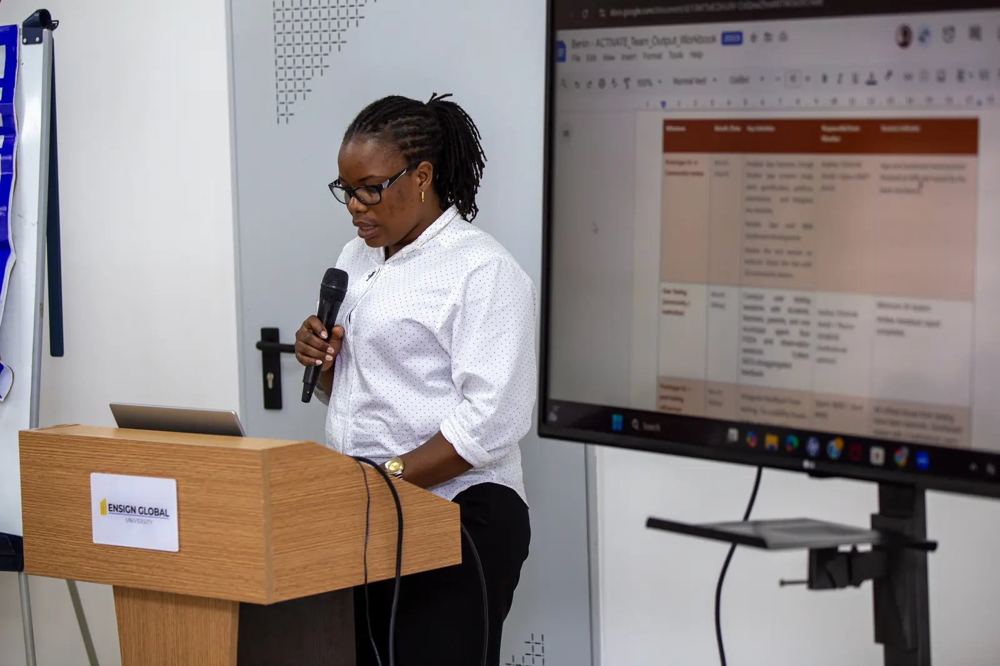

Climate Adaptation & Resilience
Locally led and ecosystem-based approaches that help communities and institutions prepare, respond and thrive under changing climate conditions.
Related: ACTIVATEThematic framework
Our five lenses help us work across the systems that shape resilience, opportunity and public action.
Locally led and ecosystem-based approaches that help communities and institutions prepare, respond and thrive under changing climate conditions.
Related: ACTIVATEGender equality and social inclusion are embedded across programme design, participation, evidence and learning—not treated as an afterthought.
Related: CAP25Creative media, virtual reality, gamification and accessible knowledge products that help scientific insight travel further.
Related: CLAREClimate finance literacy, responsible enterprise and practical support for organisations moving toward greener, more resilient models.
Related: EPICCStronger national and local climate frameworks built through usable evidence, informed dialogue and institutional collaboration.
Related: Climate & Health
How the lenses connect
A resilient community needs policy that works, finance that reaches it, evidence it can trust and meaningful inclusion in the decisions affecting it.
That is why BTS programmes deliberately cross thematic boundaries. The lens changes; the commitment to useful knowledge remains.